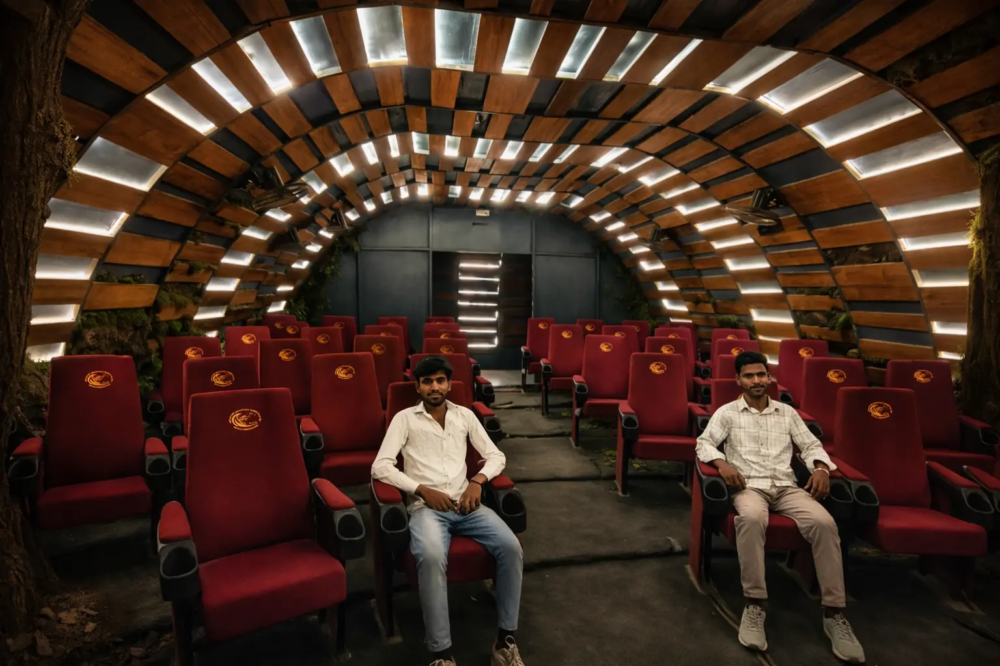
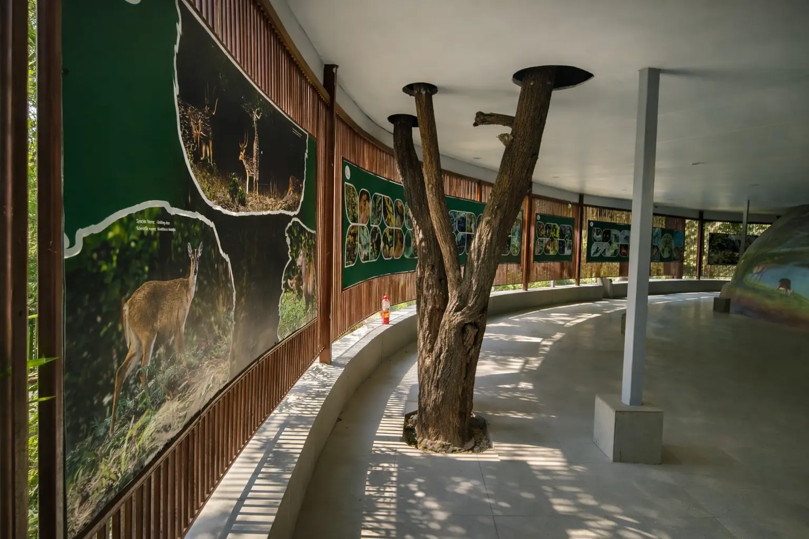
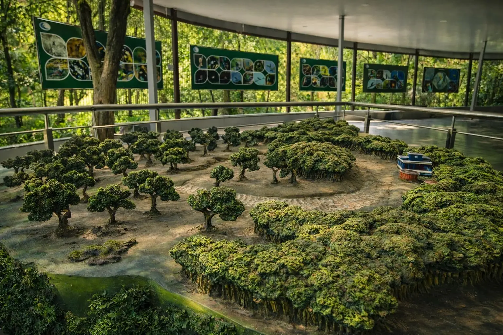
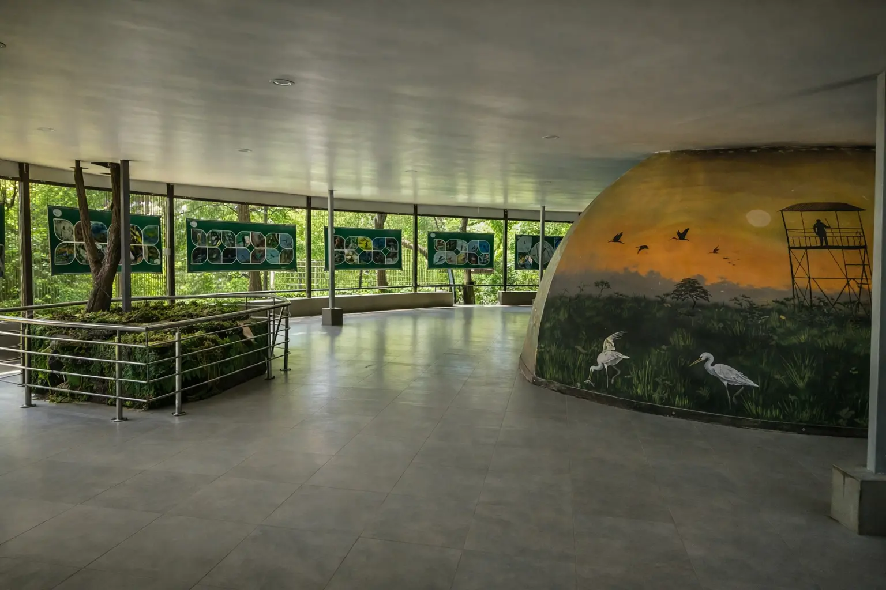

Inside the forest reserve
Interpretation Centre
Udaipur Wildlife Sanctuary
Discover wildlife, stories, and conservation knowledge through immersive exhibits crafted for curious visitors.
Inside
Sanctuary
Sanctuary
Documentary
Wildlife Map
Info Hub
ABOUT US
Interpretation Centre is commissioned to educate visitors about nature, its biodiversity, and conservation efforts. We promote quality experience to adore eco wildlife through slow vision wildlife imagery, vibrant outdoor and close live wildlife, helping every guest connect with the sanctuary’s protected landscape.
Timings
9:00 AM – 5:00 PM
Entry Included
Free with sanctuary ticket
VISITOR EXPERIENCE
20–30 mins exploration
Immersive documentary experience
Inside sanctuary premises
INSIDE THE CENTRE

Information Gallery

Wildlife Map Model

Painted Dome
Timings
9:00 AM – 5:00 PM
Entry
Included with sanctuary ticket